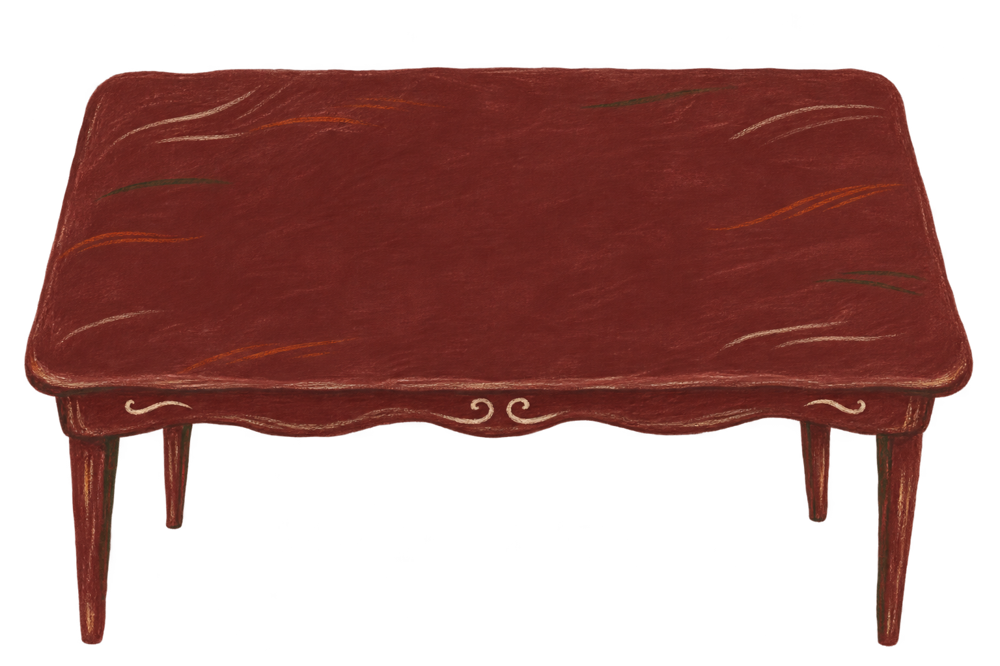
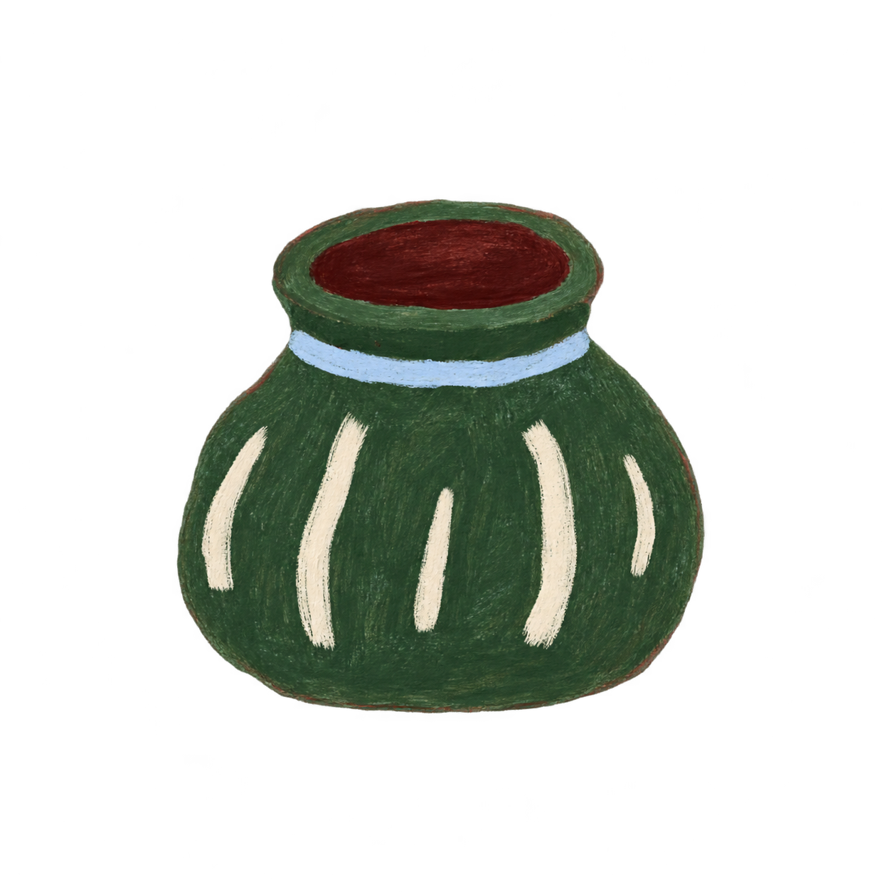
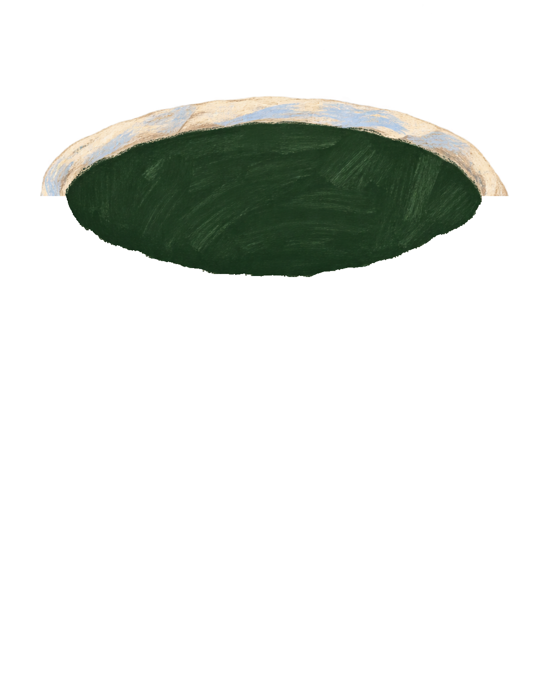
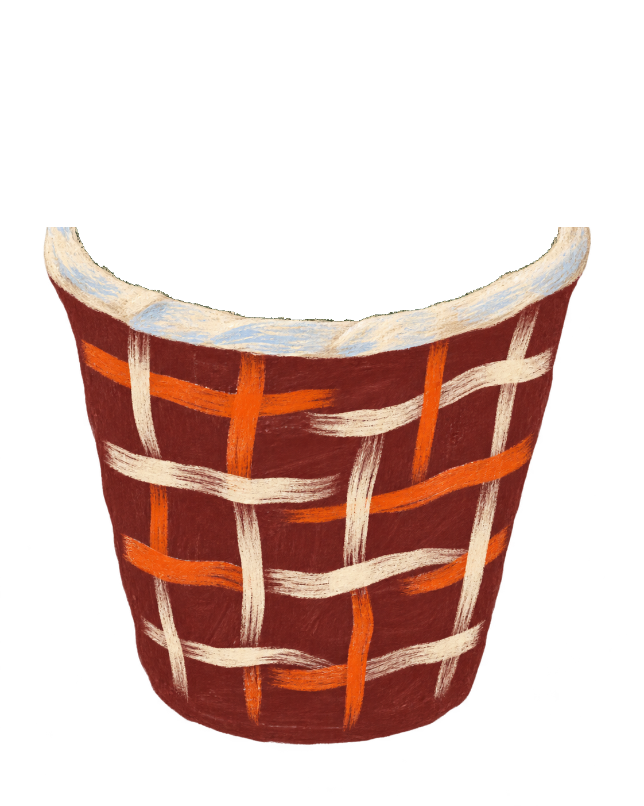

W. Shakespeare
The Writing Room
how to?
Rewrite the sentence using the words on the parchment. Keep its meaning and add the little detail. You can write more than one sentence and change word forms.
A little detail
Check looks for grammar errors, not meaning or vocabulary level. If no grammar issue is found, Shakespeare signs your page. If a grammar issue is found, you can correct your draft on a fresh sheet.



